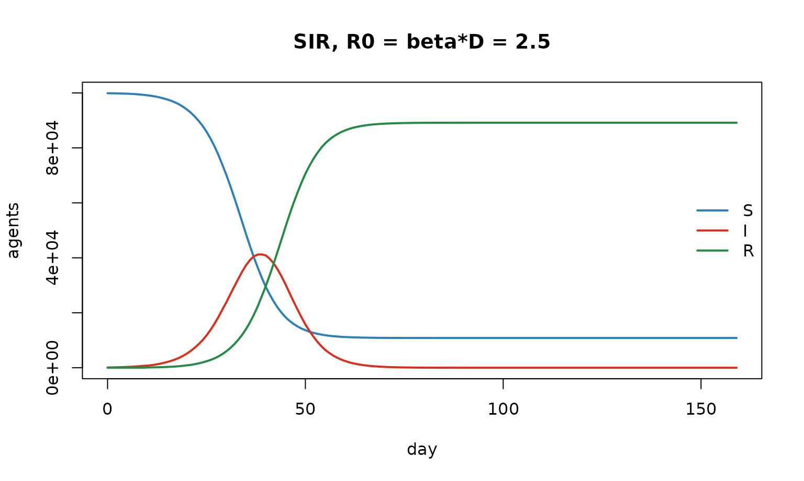
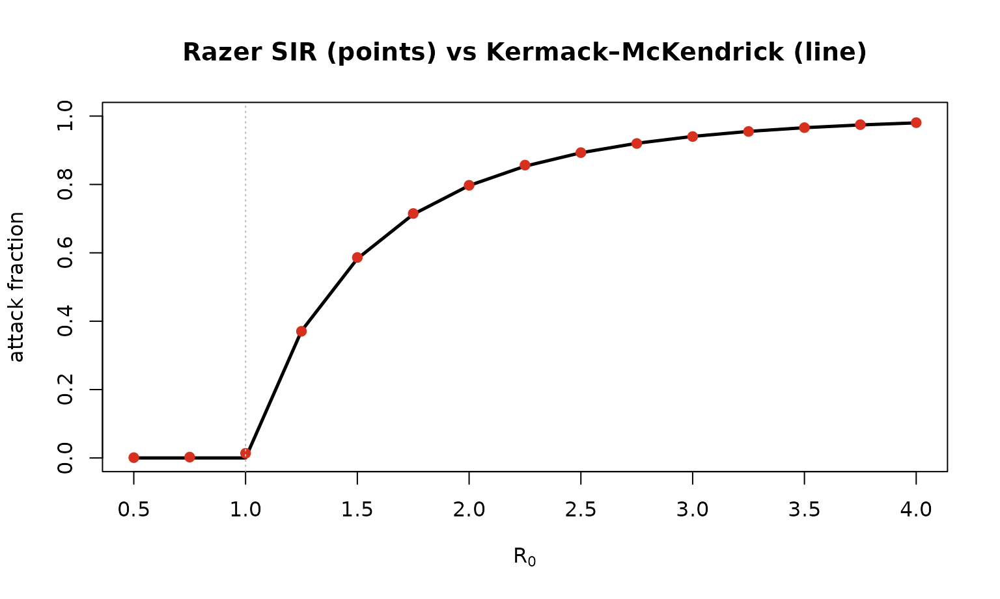
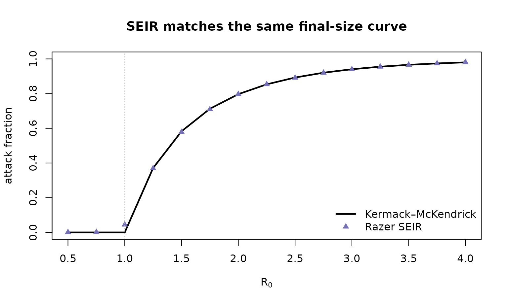

Epidemic final size: R₀, the attack fraction, and Kermack–McKendrick
Source:vignettes/articles/attack_fraction.Rmd
attack_fraction.RmdCompanion to
examples/sir_attack_fraction.Randexamples/seir_attack_fraction.R. This notebook is the why; those scripts are the runnable reference.
The model and the question
The textbook SIR model splits a population into Susceptible, Infectious, and Recovered, with mass-action transmission and exponential recovery:
where is the transmission rate, the mean infectious period, and the basic reproduction number is — the expected number of secondary cases from one infectious individual in a fully susceptible population.
A classic result (Kermack & McKendrick, 1927): a single epidemic in a closed, well-mixed, fully susceptible population infects a deterministic fraction of the population — the attack fraction — given by the transcendental relation
(For the only root is : no epidemic.) The derivation divides to get , then sets with . Notice depends on only — not on and separately, and not on any latent period. We’ll test all of that against Razer’s stochastic, agent-based simulation.
How Razer builds an SIR — and why R₀ = β·D exactly
run_model() advances an agent-based
SIR: every individual is a row in Rust-owned Column arrays
(a u8 state, a u16 recovery
timer, a u16 nodeid). Each tick
it runs, in one fixed order,
carry_forward → step (recover I→R) → calc_foi → transmission (infect S→I)The subtle part is discrete time. calc_foi computes the
per-node force of infection from the settled
start-of-interval infectious census
(not the half-updated working column), so an agent contributes to
transmission on exactly the
ticks it is infectious. That makes the realized reproduction number the
full
— not
,
the off-by-one a naive “decrement-then-count” loop would produce.
run_model derives
for us, so we pass
directly.
N <- 1e5L; D <- 10L
m <- run_model(data.frame(population = N, I = 100L), "SIR", nticks = 160L,
r0 = 2.5, infectious_period = D, seed = 1L) # beta = 2.5 / 10 = 0.25
traj <- cbind(S = m$nodes$S$values()[, 1], I = m$nodes$I$values()[, 1], R = m$nodes$R$values()[, 1])
matplot(0:159, traj, type = "l", lty = 1, lwd = 2, col = c("#2c7fb8", "#d7301f", "#238b45"),
xlab = "day", ylab = "agents", main = sprintf("SIR, R0 = beta*D = %.1f", 2.5))
legend("right", c("S", "I", "R"), col = c("#2c7fb8", "#d7301f", "#238b45"), lwd = 2, bty = "n")
cat(sprintf("attack fraction here = 1 - S_inf/N = %.3f (K-M predicts ~0.89)\n",
1 - tail(traj[, "S"], 1) / N))## attack fraction here = 1 - S_inf/N = 0.892 (K-M predicts ~0.89)The final-size test
We sweep
,
run each to completion, and read off
.
(Agent-based run_model has no early stop, so we just use a
horizon long enough for the epidemic to finish.) Then we overlay the
Kermack–McKendrick curve.
km_attack <- function(R0) if (R0 <= 1) 0 else
uniroot(function(A) 1 - exp(-R0 * A) - A, c(1e-9, 1 - 1e-12))$root
sim_attack <- function(R0, n = 1e5L, D = 10L, horizon = 1500L) {
mm <- run_model(data.frame(population = n, I = 50L), "SIR", nticks = horizon,
r0 = R0, infectious_period = D, seed = 1L)
S <- mm$nodes$S$values()[, 1]; 1 - S[length(S)] / n
}
R0_grid <- seq(0.5, 4, by = 0.25)
sim <- vapply(R0_grid, sim_attack, numeric(1))
km <- vapply(R0_grid, km_attack, numeric(1))
plot(R0_grid, km, type = "l", lwd = 2.5, ylim = c(0, 1),
xlab = expression(R[0]), ylab = "attack fraction",
main = "Razer SIR (points) vs Kermack–McKendrick (line)")
points(R0_grid, sim, pch = 19, col = "#d7301f"); abline(v = 1, lty = 3, col = "grey")
## max |sim - theory| for R0 >= 1.5: 0.0035The agreement is to a few thousandths across the supercritical range — a strong validation that the agent model realizes . Just above threshold () the finite seeded population gives a small positive attack fraction where the deterministic theory predicts zero: expected near-critical, finite-size stochastic behavior.
SEIR: a latent stage delays but does not change the final size
Adding an Exposed (latent) state —
run_model(model = "SEIR", incubation_period = …) — inserts
a non-infectious delay
.
It slows the epidemic’s timing but, because the latent period
doesn’t change how many people one case infects, leaves the final size
obeying the same relation in
(the infectious period alone).
sim_attack_seir <- function(R0, n = 1e5L, D = 10L, De = 5L, horizon = 2000L) {
mm <- run_model(data.frame(population = n, I = 50L), "SEIR", nticks = horizon, r0 = R0,
infectious_period = D, incubation_period = De, seed = 1L)
S <- mm$nodes$S$values()[, 1]; 1 - S[length(S)] / n
}
sim_se <- vapply(R0_grid, sim_attack_seir, numeric(1))
plot(R0_grid, km, type = "l", lwd = 2.5, ylim = c(0, 1), xlab = expression(R[0]),
ylab = "attack fraction", main = "SEIR matches the same final-size curve")
points(R0_grid, sim_se, pch = 17, col = "#7570b3"); abline(v = 1, lty = 3, col = "grey")
legend("bottomright", c("Kermack–McKendrick", "Razer SEIR"), pch = c(NA, 17),
lwd = c(2.5, NA), col = c("black", "#7570b3"), bty = "n")
Customize and extend
-
Different periods.
infectious_period/incubation_periodaccept a number (a constant) or any RazerDistribution, e.g.dist_gamma(2, 4)ordist_normal(7, 1.5). Try a fat-tailed infectious period and confirm the final size is unchanged (it depends on the mean via , not the shape). -
Reproducibility.
seed = 1Lthreads a seeded RNG through the Rust kernels; drop it for entropy-seeded runs, or loop over seeds to get confidence bands on the attack fraction near threshold. -
Beyond one node. Pass a
networkmatrix (an coupling) and a multi-rowscenario; the same final-size logic holds per well-mixed patch (seeexamples/simple_sir.Rfor a 954-patch spatial version). -
Other structures. Swap
"SIR"for any of the eight menagerie models, or add waning ("SIRS"/"SEIRS", withimmunity_period) — but note waning breaks the single-epidemic assumption, so the final-size relation no longer applies (see the endemic dynamics notebook).